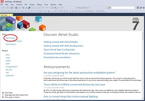
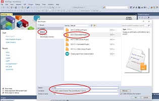
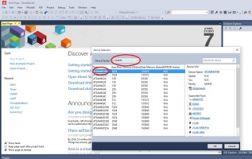
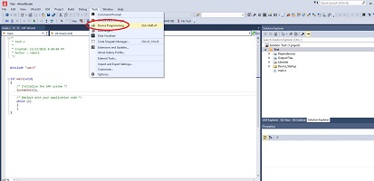
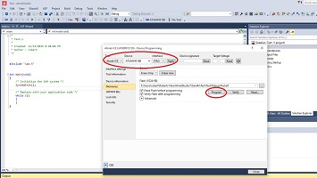
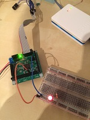

Download. Atmel Studio is based on Microsoft Visual Studio, so this is a windows only tool. Make sure you check the hardware and operating system requirements. It's a beast, so make sure your computer is up to the task.
When you first connect your Atmel-Ice via USB, windows will automatically detect it and install the drivers. Initially, I had Atmel Studio 6.x and it didn't install the driver properly. Make sure you have the most up to date version of Atmel Studio. After the drivers install open up Atmel Studio. You may get a message that says the firmware on the tool needs to be upgraded. Just click through the prompts to get it upgraded.
When you first open Atmel Studio 7 you will be greeted with a page that looks like this:

Click on 'New Project'

Choose C/C++, GCC C Executable Project, Name: project name, Location: Path to where you want to save all your project files.

Our Dev board is based on the ATSAM4S16B, so from the dropdown choose SAM4S and then select ATSAM4S16B from the list.
After clicking through the prompts, we will arrive at our main programming screen. It will contain the bare bones code needed to compile and flash the chip. The initial code sets up the microcontroller system by calling the function systeminit() - a premade function from Atmel. If you go searching through the included code you'll find that this function doesn't do a whole lot. By default it sets the FWS bit in the EEFC_FMR register to 1 which defines the number of wait states for read and write operations. After adding your code and you're ready to compile and send your program to the chip, press 'f7' to compile. If there are no errors then we can continue to flash the chip with our programmer. Click on 'Tools' from the menu and click on 'Device Programming'
At this point we should connect our Atmel-Ice programmer via usb to the computer and connect the cable to the JTAG port on the Dev board.

Choose your Tool: Atmel-Ice, Device: ATSAM4S16B, Interface: JTAG and click apply. Click on read and it should show the device signature and voltage it is running at. If there are any errors, check your connections and make sure power to the dev board is on.

Click on the button 'Program' and Atmel Studio will send your program through Atmel-Ice to your Dev board. Here is a picture of flashing the first GPIO hello world program which is found in the first tutorial 'GPIO'.

The next version of this board will have a jtag header pin pitch to match the Atmel-Ice cable.
{kind=link}
{kind=link}
{kind=link}
{kind=link}
{kind=link}
{kind=link}